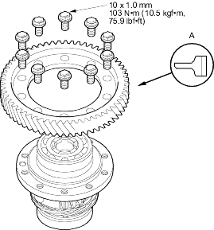
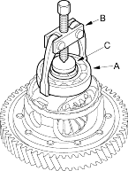
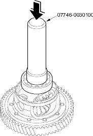

- Remove the final driven gear from the differential carrier. The final driven gear bolts have left-hand threads.

- Install the final driven gear with the chamfered side on the inner bore (A) facing the differential carrier.
- Tighten the bolts to 103 Nm (10.5 kgf/m, 75.9 lbf/ft) in a criss-cross pattern.
Driver 40 mm I.D., 07746-0030100
- Remove the bearings (A) with a commercially available bearing puller (B) and stepper adapter (C).

- Install the new bearings with the special tool and a press. Press the bearing on until it bottoms.
